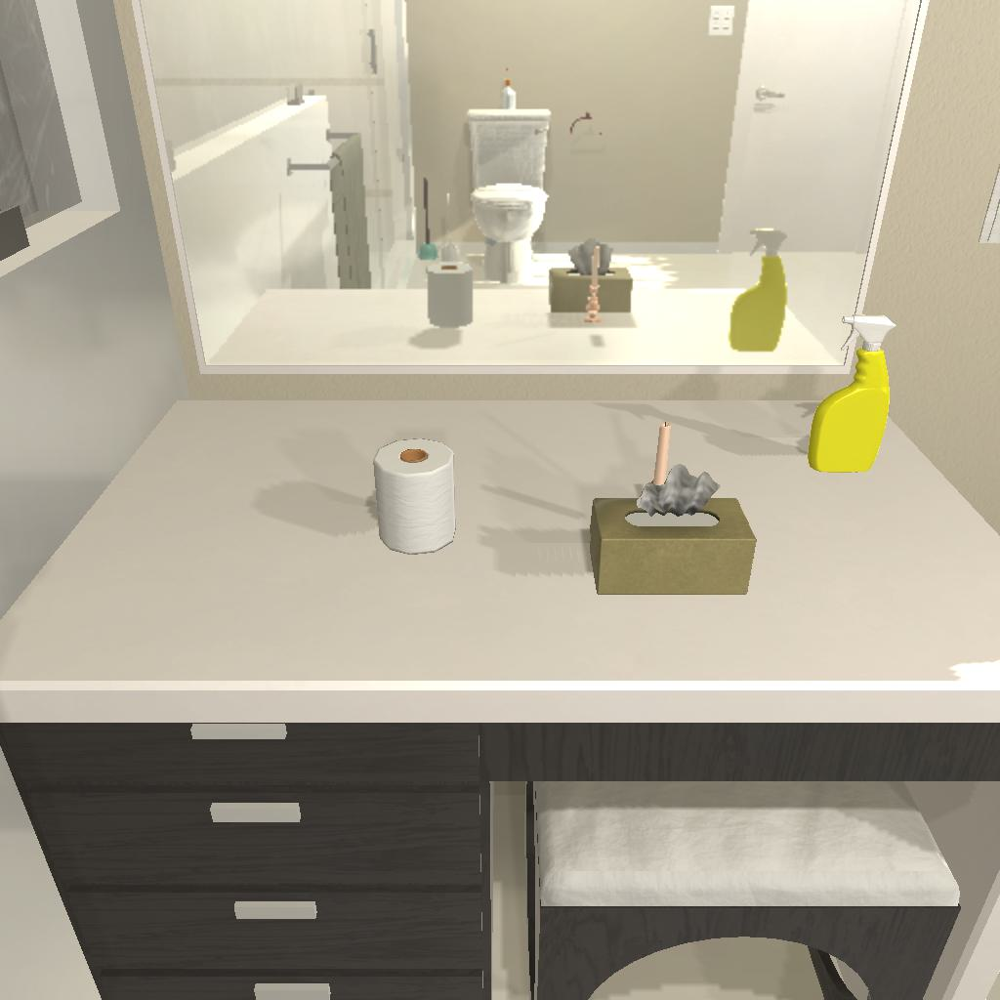

---------------------------------------------------------task: 28---------------------------------------------------------
--------------------------------------------------------------------------------------------------------------------------------------------------------------------
--------------------------------------------------------------------------------------------------------------------------------------------------------------------
Step:--------------------------------------------------------------------------3-------------------------------------------------------------------------------
----------------------------------------
VLM Prompt:
Image1:
Image2:
**Instruction**
1. Analyze the provided images to identify all visible household objects and compare the difference between images (e.h. whether the object is opened or not and taken on hand or not), focusing on those relevant to the task description "put two spraybottle in toilet."
2. Use the analysis of images and the task hint "The agent must find an object of the desired type, pick it up, find the correct location to place it, put it down there, then look for another object of the desired type, pick it up, return to previous location, and put it down there with the other object." to answer the question: what is the most reasonable action in the choices for the task description "put two spraybottle in toilet"?
3. Decide and write the answer using the template: The answer is: (i): , where i is the real number. If there is no desired object in images, search every place based on **Initial Observation** to find the object. And if no one is exactly correct, choose a similar answer.
**Initial Observation**
You are in the middle of a room. Looking quickly around you, you can see bathtub (1), bathtubbasin (1), cart (1), sink (1), garbagecan (1), sinkbasin (1), countertop (1), drawer (1-4), toilet (1), toiletpaperhanger (1)
**Answer Choices**
(1): go to bathtub 1
(2): go to bathtubbasin 1
(3): go to cart 1
(4): go to sink 1
(5): go to garbagecan 1
(6): go to sinkbasin 1
(7): go to countertop 1
(8): go to drawer 1
(9): go to drawer 2
(10): go to drawer 4
(11): go to toilet 1
(12): go to toiletpaperhanger 1
(13): open drawer 3
(14): close drawer 3
(15): examine drawer 3
**Answer**
Let's think step by step by following the instructions.
----------------------------------------
----------------------------------------
Original Response:
Image Analysis:
- In Image 1, we can see a toilet with a spray bottle on top of the toilet tank. The spray bottle appears to be closed and stationary, not taken in hand.
- In Image 2, we see a countertop with various objects, including a roll of toilet paper, a candle on a holder, and cleaning supplies. There is a spray bottle visible on the countertop, and it also appears to be closed and stationary.
Task Analysis:
The task description is "put two spraybottle in toilet." From the images analyzed, we have identified one spray bottle on the toilet tank in Image 1 and another on the countertop in Image 2. The task hint suggests that we will need to pick up an object of the desired type (spray bottle) and place it in the correct location (toilet), then repeat the process for a second object of the same type.
Most Reasonable Action:
Based on the analysis and task hint, the most reasonable action would be to go to the location where a spray bottle is present and pick it up. Since we see a spray bottle on the countertop in Image 2, the first step is to go to that location.
The answer is: (7): go to countertop 1
----------------------------------------
----------------------------------------
>>> Refine Original VLM Response and Get Pure Action: go to countertop 1
----------------------------------------
-----------------------------------------------------------------
Running time: 11.421083927154541 seconds
Total Money: 14.446850000000003
-----------------------------------------------------------------
-----------------------------------------------------------------
Text Observation:You arrive at loc 6. On the countertop 1, you see a tissuebox 1, a toiletpaper 1, a spraybottle 1, a handtowel 1, and a candle 1.
-----------------------------------------------------------------
UNSUCCEED